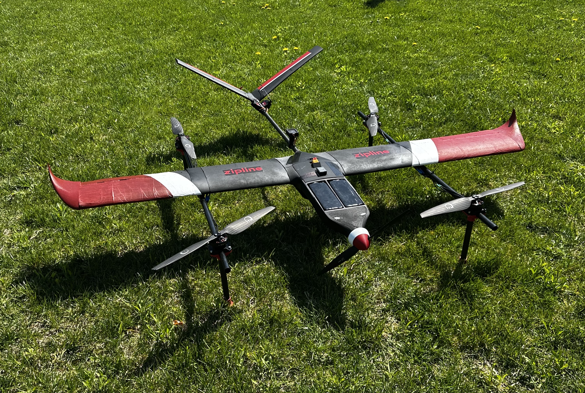
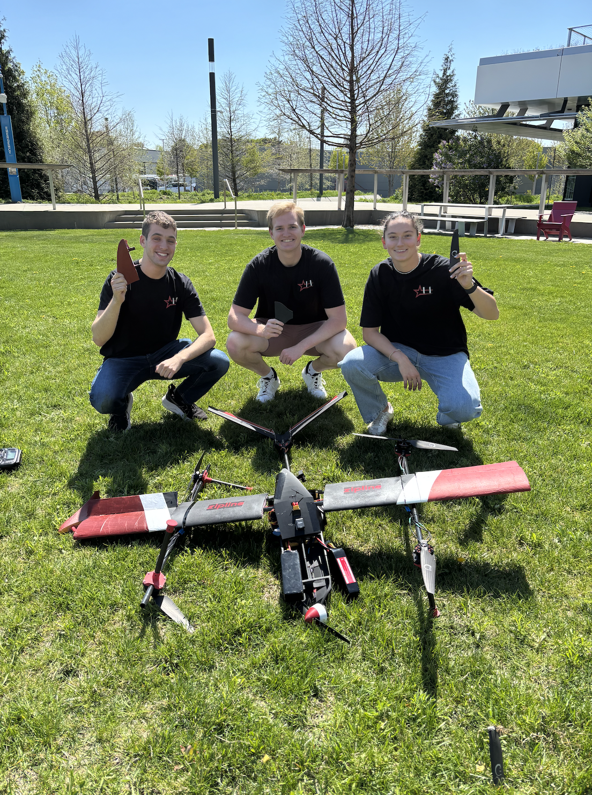

VTOL Hybrid UAV for Fire Suppression Missions
Project Overview
Spearheaded the design and development of a VTOL hybrid UAV for fire suppression missions as the chief engineer of the UAV Team under the Harvard Undergraduate Aerospace Collective (HUAC). The project involved devloping a quadplane from conception to a V1 prototype as our first iteration of the design intended to fly in the Vertical Flight Society's 2027 Design-Build-Vertical Fly Competition. (see full project details in our Final Technical Report below).

Finished Quadplane Set for Maiden Flight
Final Technical Report (Spring 2026)
Key Design Features
Key design features of this build involved the developement of a radial expansion mechanism for payload pickup and delivery, as well as the integration of a hybrid propulsion system to enhance flight endurance and efficiency. We designed our quadplane aircraft to operate in challenging environments, with considerations for aerodynamics, weight distribution, and control systems to ensure stability during vertical takeoff and landing. These criteria were essential for the UAV to effectively perform under competition conditions and essentially in fire suppression scenarios, where precision and reliability are paramount.
Specifically for the radial expansion mechanism, we drew inspiration from existing mechanisms designed to convert rotation motion to linear expansion of a circle to be able to fit underneath the payload when the mechanism is in the closed positon, and then once expanded, locks the payload in place to secure it to the UAV during flight. In the current stage of the project, the entire mechanism is 3D printed and is designed to be lightweight and durable, with the ability to withstand the forces experienced during flight and payload handling. The mechanism is also designed to be easily integrated into the UAV's overall structure, allowing for quick attachment and detachment of payloads as needed for different mission requirements.
V1 Radial Expansion Mechanism
Crude V1 Prototype Radial Expansion Payload Pickup Demo
Limitations and Future Work
Beyond the technical challenges, the project was constrained by both time and resources. With development beginning in February and culminating in an early May fly-off date, our team had only a single semester to move from concept to a flight-ready prototype. The limited budget further restricted our ability to procure critical components and perform extensive iterative testing. To help address these constraints, I enlisted the help of Harvard alumni and industry contacts to secure sponsorships and donations that funded key hardware, raising over $1000 in my efforts. Although thisenabled the project to move forward, the compressed timeline still limited the amount of testing and refinement that could be completed before the final prototype, reinforcing the importance of early iterative development and intermittent testing to identify and resolve issues as they arise.
Looking ahead, our next steps for the project involve redesigning the structure of the UAV to improve rigidity, as the main issue we encountered in our maiden flight was torsion in the wings, causing the aircraft to be unstable and ultimately crash roughly 5 seconds into the takeoff. We also plan to invest more time in both bench and flight testing to ensure that the UAV is fully optimized for performance and reliability. Additionally, we aim to explore alternative materials and construction techniques to enhance the UAV's durability and reduce weight where possible, further improving its flight characteristics. By addressing these limitations and implementing the planned improvements, we hope to create a more robust and capable UAV that can effectively perform in fire suppression missions and other challenging environments.

Myself and Members of the UAV Team After Maiden Flight